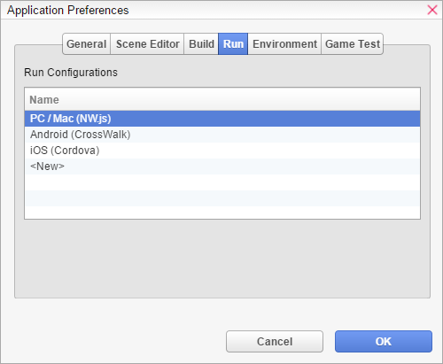
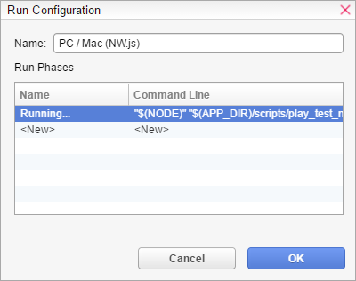
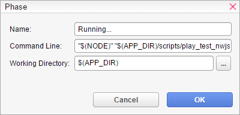

- WEBM
HTML
运行配置To 修改现有运行配置或创建新配置，您必须通过应用程序首选项打开菜单栏

并转到“运行”选项卡。

- 在那里您可以看到所有运行配置。双击即可编辑选定的运行配置。名称
- - 运行配置的名称。该名称显示在菜单和进度窗口中。运行阶段
- 依次执行的运行阶段列表。

- 每个运行配置都包含一个阶段列表，这些阶段按顺序执行。名称
- - 阶段的名称。该名称显示在进度窗口的详细信息部分。命令行
- - 作为 VN Maker 的子进程执行的命令行。子进程终止后，将触发下一个阶段。子进程的标准输出流被重定向到进度窗口控制台。工作目录
- 命令行的工作目录（CWD）。如果为空，则使用输出目录。
每个阶段都执行一个命令行来处理游戏数据或以特定方式启动游戏。一组变量，以 $ 符号开头，如 "$(NODE)"，可用于命令行和工作目录字段。有关所有可用变量及其值的更多信息，请参见下文。
变量
以下变量可用于生成配置阶段的命令行和工作目录字段。变量需要采用以下格式：
$(VARIABLE_NAME)
- 以下变量可用：NODE
- - VN Maker 内部 Node.js 可执行文件的路径。APP_DIR
- - VN Maker 安装目录的路径。PROJECT_DIR
- - 当前项目文件夹的路径。OUTPUT_DIR
- - 输出文件夹的路径。PROJECT_NAME
- - 当前项目的名称。GAME_TITLE